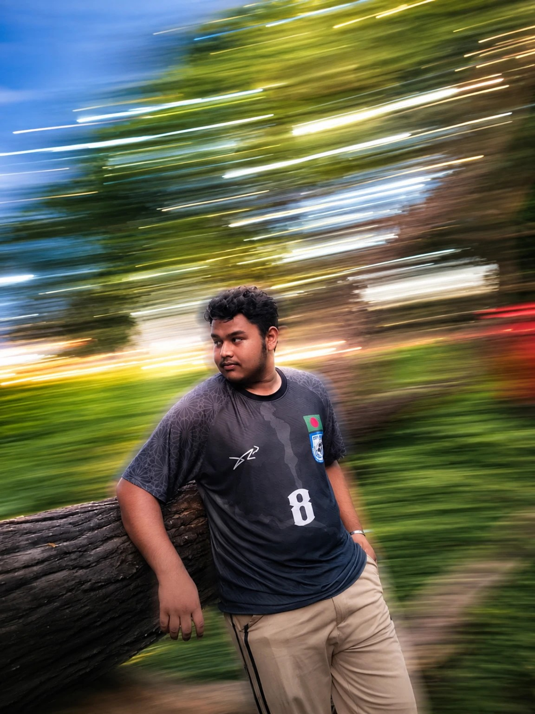
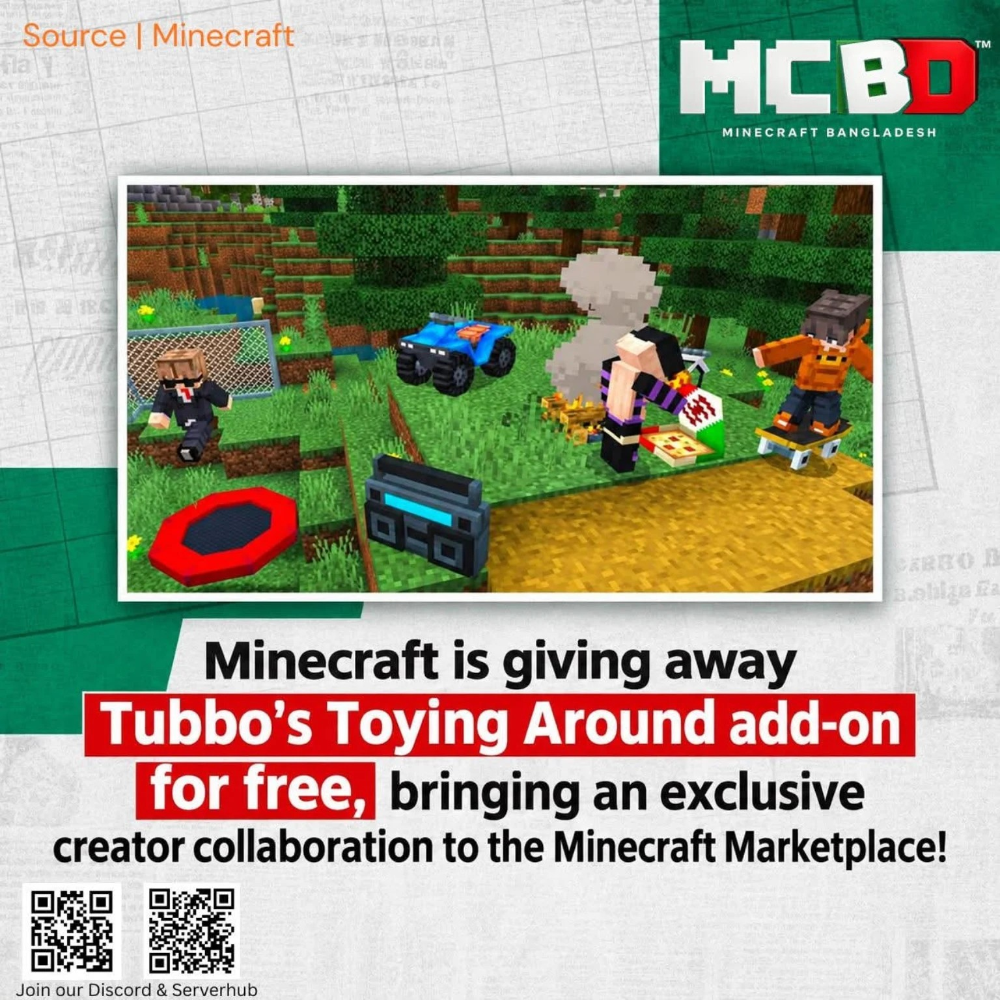
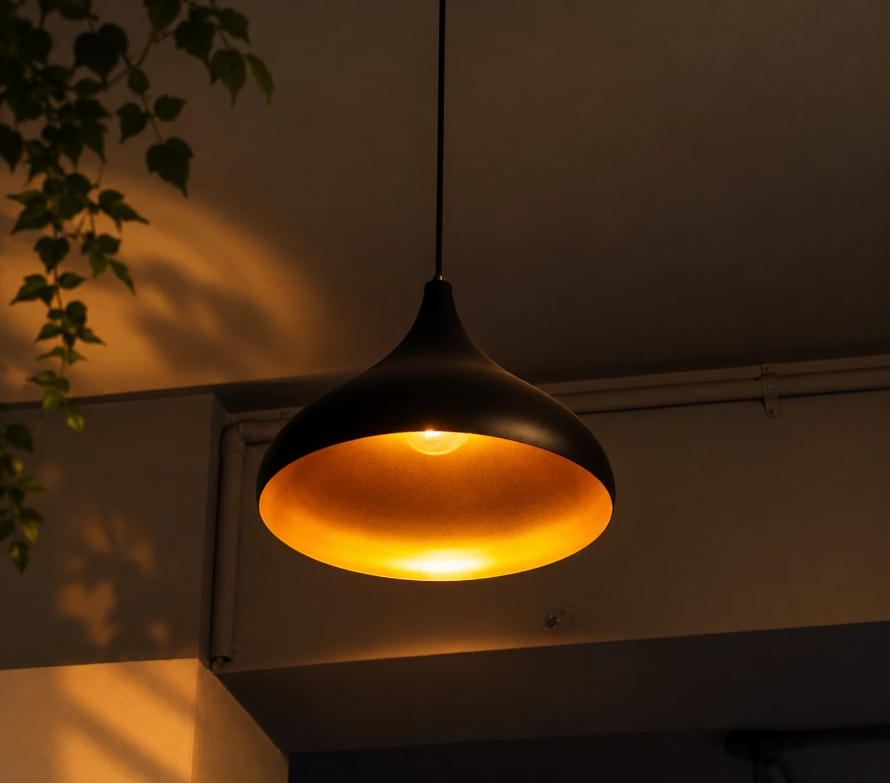
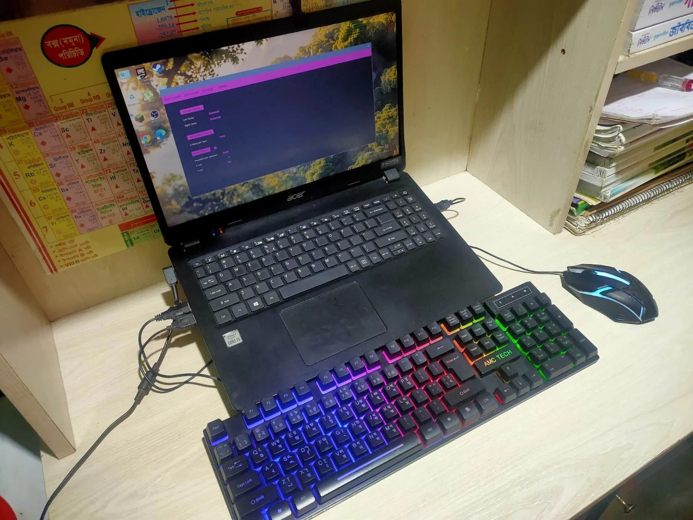
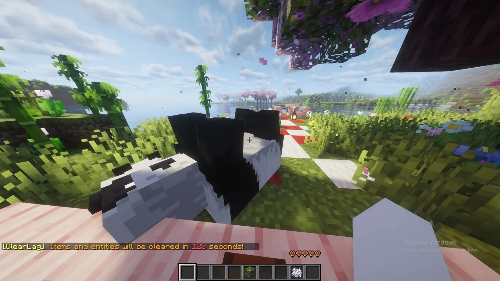
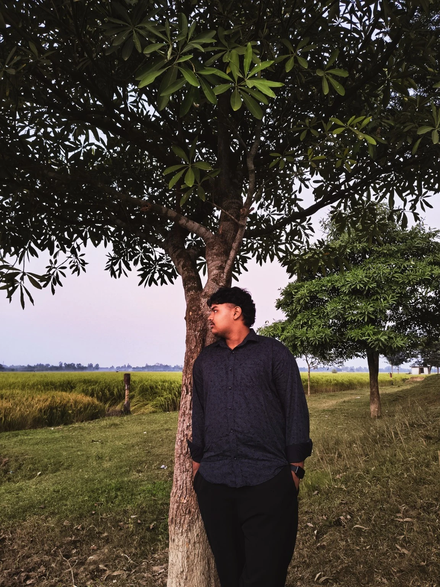
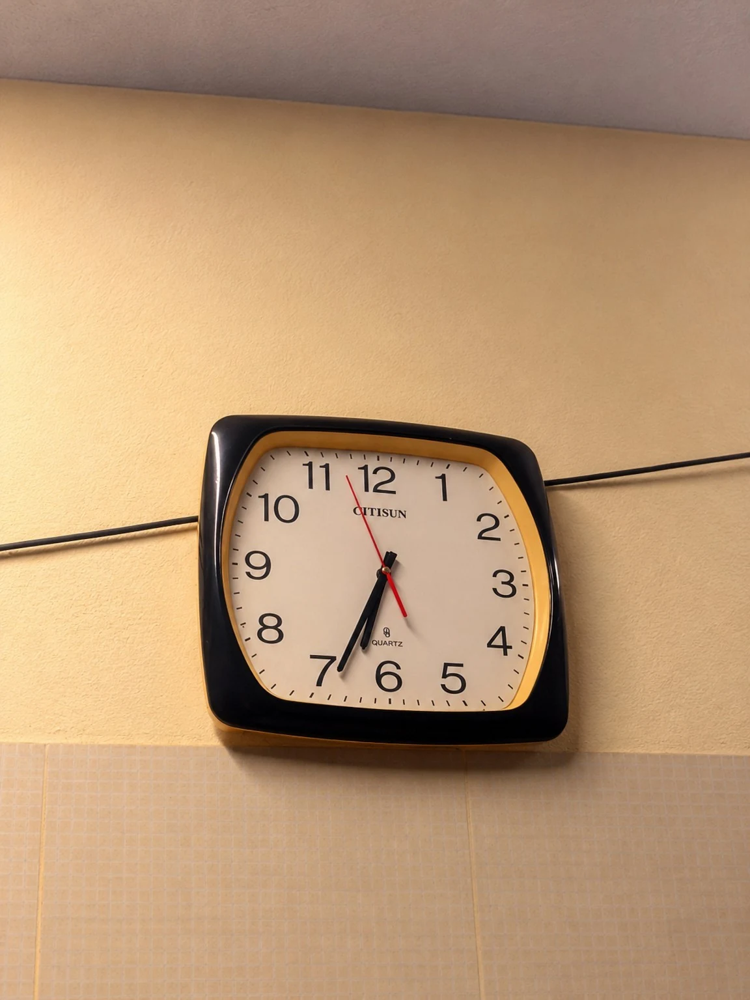

Social Media Management
Planning, coordinating and supporting content and platform activity.
FacebookInstagramXTwitchTikTok
HELLO, I'M
Exploring the space between creativity, technology and digital communities. Learning by making — and making with purpose.

I'm Nafis Islam Nirob, a student from the Rangpur region of Bangladesh. I'm interested in the intersection of creativity, technology and digital communities.
I enjoy photography, gaming and Minecraft BedWars, while developing my skills in visual design, social media and community operations. I value reliability, clear communication and steady improvement.
Planning, coordinating and supporting content and platform activity.
Visual communication and graphic concepts for digital communities and projects.
Helping communities stay organized, welcoming and active.
Supporting tournament planning, hosting and event coordination.
Taking responsibility, working with teams and helping move shared goals forward.
Exploring digital promotion, audience engagement and online business operations.
Helping build and manage a game-development creator community, supporting members and community operations.
Supporting community moderation and helping maintain a constructive environment for members.
Developing experience across social media activity, visual design, community management, event hosting and team coordination.
Experience duration: 3+ years, as provided. Specific employment dates and client engagements have not been supplied.
A game-industry venture focused on exploring game-related ideas and opportunities.
GAMES IN DEVELOPMENT / DETAILS TO COMEA software-related venture exploring digital products and technology-focused ideas.
SOFTWARE DETAILS TO COMEA clothing business creating products for gaming audiences and broader fashion interests.
APPAREL DETAILS TO COMEFounder and leadership responsibilities across ventures, including CFO, COO, CEO and Founder roles, as provided.
A visual snapshot of interests and experience areas. Project descriptions are kept honest where detailed case studies are not yet available.

Gaming-community content, update explainers and creator-focused promotional visuals.

Exploring light, atmosphere, composition and everyday visual storytelling.

A look into the tools and environment behind digital experiments and creative work.

Gaming, community participation and documenting memorable in-game moments.




These are experience areas and visual samples, not claims of specific client deliverables, awards or completed commercial projects.
For collaboration, business discussions or a conversation about creative and digital work, feel free to reach out.
nafisnirob14@gmail.com ↗